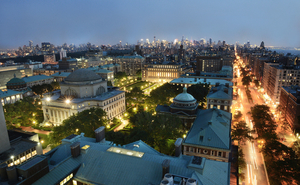

Ammaar Fakir
Which City?
Bogota

- I'd like to visit Bogota since its people is recorded as the happiest of all the cities in the
world.
- Colombia has a unique mix of ethnic cultures, ranging from indigenous African roots to Spanish
settlers.
- This combination creates some of the nicest and best looking people on the planet.
Foreign Language
| Japanese |
English |
| ありがとう (Arigatō) |
Thank you |
|
はい>。(Hai) |
Yes |
| すみません (Sumimasen) |
Excuse me |
Historic Places in Cape Town
Slave Lodge
- The Slave Lodge is one of the oldest buildings in Cape Town.
- The building was used as a slave lodge until 1811 when it was changed into government
offices
by
the new
British colonial authorities.
- Slave Lodge housed the slaves who belonged to the Dutch East India Company (VOC)
Castle
- The first stone was laid on 2 January 1666 and it was completed by April 1679.
- The materials used to build the Castle were local and included rock cut from the granite
outcrop on
Signal
Hill, and blue slate and shells – transported from Robben Island
- In 1936 the Castle of Good Hope was declared a national monument.
City Hall
- Nelson Mandela made his first free speech from a balcony at the Cape Town City Hall in
1990.
- The Hall itself is made up of components from all over the world. The honey-coloured
stone, which
makes up
its façade of limestone, was imported from Bath in England.
- The City Hall is adjacent to The Castle Of Good Hope.